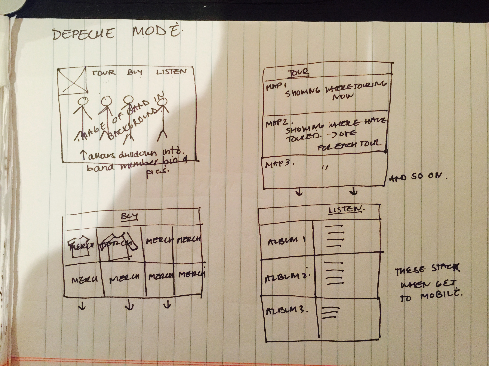

Website Comparison
Which two websites are you most inspired by?
http://www.u2.com/index/home
http://www.u2.com/index/home
How do they exhibit effective use of space, size or balance?
http://www.u2.com/index/home
like:
better than most band sites as is not as crowded as most
mobile friendly
horizontal bands on homepage a nice way to manage info, but could be cleaner
nice to be met with a big photo of band right away
do not like:
navigation a bit crowded, should have less sections
subnavigation overkill, and at times overwhelming
feels like should be a lot more visually stark particularly as the band has gone back to basics, and their roots, so that a different visual treatment is called for
feels like the site is many pieces that have been built over time. It is time for a complete overhaul and massive simplification
browsing by topic area is super dated
http://wherehaveallthewildlingsgone.com/
like:
faceless figures really allows you to focus on costumes and characters
nice clean navigation
takes a complicated plot and simplifies massively
like layers as you scroll down, as it feels methodical in a good way
Complex stuff made approachable and visually engaging
love use of costumes to describe a show/families, etc.
easy to scan, pleasant to read
nice visual variety between the figures, and text, a map, etc.
use of bands created a nice sense of predictability
do not like:
not responsive when could work so nicely on mobile
do not like how navigation floats. like that stays with you, but becomes distracting and cheapens layout
What makes them similar and different?
use of horizontal bands
u2 does not have a clear mission (what does success look like here, ie satisfied fans, more downloads? more tickets?)
wildlings s super clear in mission and the designer's love for show comes out completely and the mission to simplify via great engaging visuals
Thumbnail Sketches
Home
Tour
Buy
Listen
